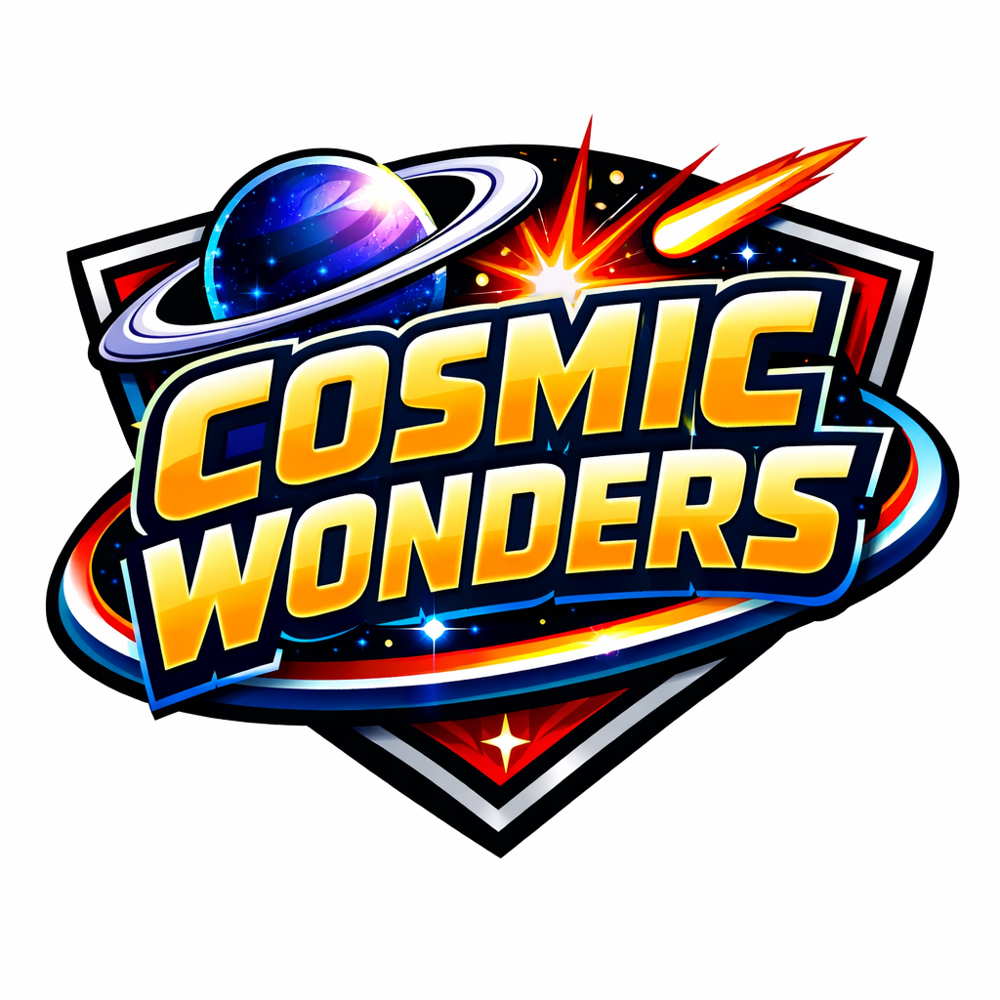

A Universe of Stories, Secrets, and Strange Light
The Cosmic Wonders universe begins with Mr. Wonder, the host and father-brand avatar who guides readers through strange light, hidden truths, and the mysteries woven through the cosmic fabric. His arrival marks the first spark in a universe filled with impossible stories waiting to be told.